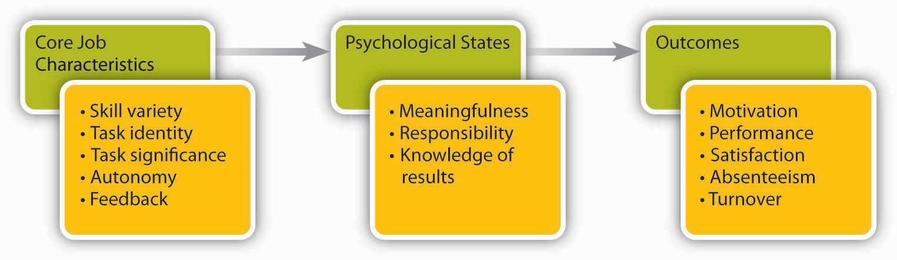
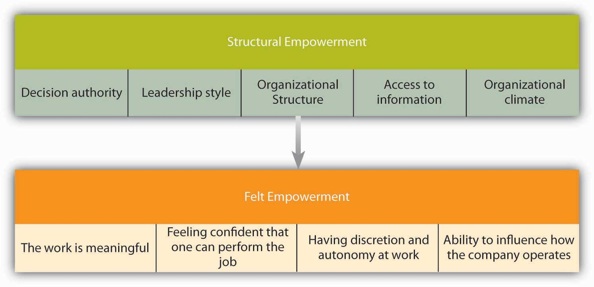
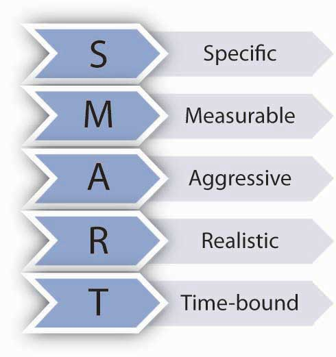
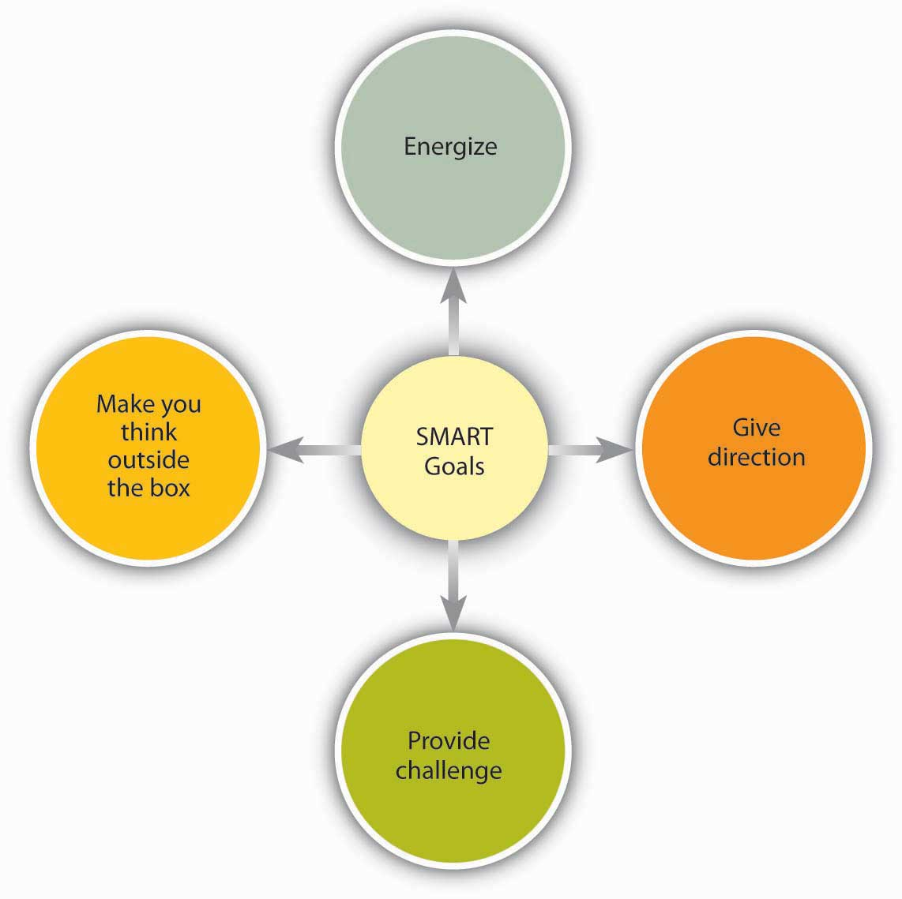
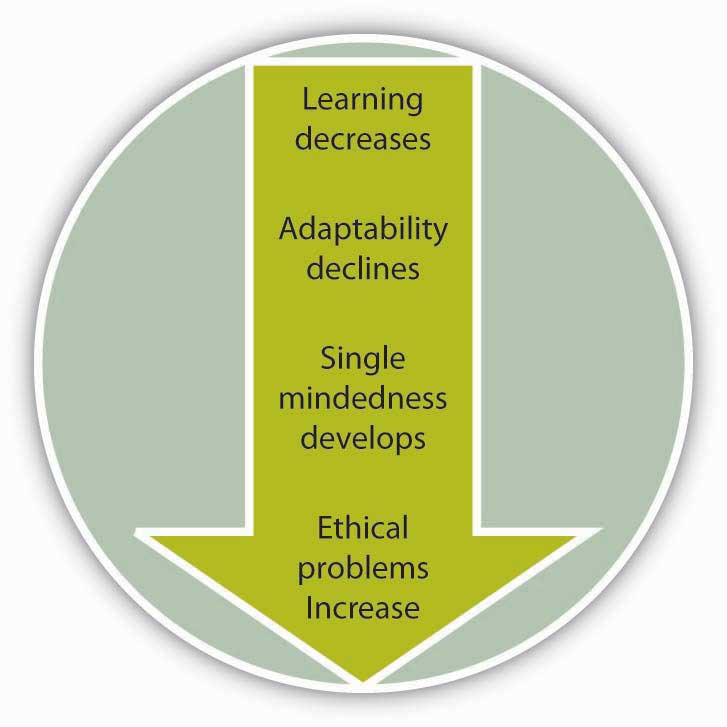

After reading this chapter, you should be able to do the following:
What are the tools companies can use to ensure a motivated workforce? Nucor seems to have found two very useful tools to motivate its workforce: a job design incorporating empowerment, and a reward system that aligns company performance with employee rewards. In this chapter, we will cover the basic tools organizations can use to motivate workers. The tools that will be described are based on motivation principles such as expectancy theory, reinforcement theory, and need-based theories. Specifically, we cover motivating employees through job design, goal setting, performance feedback, and reward systems.
Manufacturing steel is not a glamorous job. The industry is beset by many problems, and more than 40 steel manufacturers have filed for bankruptcy in recent years. Most young employees do not view working at a steel mill as their dream job. Yet, one company distinguished itself from all the rest by remaining profitable for over 130 quarters and by providing an over 350% return on investment (ROI) to shareholders. The company is clearly doing well by every financial metric available and is the most profitable in its industry.
How do they achieve these amazing results? For one thing, every one of Nucor Corporation’s (NYSE: NUE) 12,000 employees acts like an owner of the company. Employees are encouraged to fix the things they see as wrong and have real power on their jobs. When there is a breakdown in a plant, a supervisor does not have to ask employees to work overtime; employees volunteer for it. In fact, the company is famous for its decentralized structure and for pushing authority and responsibility down to lower levels in the hierarchy. Tasks that previously belonged to management are performed by line workers. Management listens to lower level employees and routinely implements their new ideas.
The reward system in place at Nucor is also unique, and its employees may be the highest paid steelworkers in the world. In 2005, the average Nucor employee earned $79,000, followed by a $2,000 bonus decided by the company’s annual earnings and $18,000 in the form of profit sharing. At the same time, a large percentage of these earnings are based on performance. People have the opportunity to earn a lot of money if the company is doing well, and there is no upward limit to how much they can make. However, they will do much worse than their counterparts in other mills if the company does poorly. Thus, it is to everyone’s advantage to help the company perform well. The same incentive system exists at all levels of the company. CEO pay is clearly tied to corporate performance. The incentive system penalizes low performers while increasing commitment to the company as well as to high performance.
Nucor’s formula for success seems simple: align company goals with employee goals and give employees real power to make things happen. The results seem to work for the company and its employees. Evidence of this successful method is that the company has one of the lowest employee turnover rates in the industry and remains one of the few remaining nonunionized environments in manufacturing. Nucor is the largest U.S. minimill and steel scrap recycler.
Case written by [citation redacted per publisher request]. Based on information from Byrnes, N., & Arndt, M. (2006, May 1). The art of motivation. BusinessWeek. Retrieved April 30, 2010, from http://www.businessweek.com/magazine/content/06_18/b3982075.htm; Foust, D. (2008, April 7). The best performers of 2008. BusinessWeek. Retrieved April 30, 2010, from http://www.businessweek.com/magazine/toc/08_14/B4078bw50.htm?chan=magazine+channel_top+stories; Jennings, J. (2003). Ways to really motivate people: Authenticity is a huge hit with Gen X and Y. The Secured Lender, 59, 62–70; Marks, S. J. (2001). Incentives that really reward and motivate. Workforce, 80, 108–114.
Many of us assume the most important motivator at work is pay. Yet, studies point to a different factor as the major influence over worker motivation—job design. How a job is designed has a major impact on employee motivation, job satisfaction, commitment to an organization, absenteeism, and turnover.
The question of how to properly design jobs so that employees are more productive and more satisfied has received attention from managers and researchers since the beginning of the 20th century. We will review major approaches to job design starting from its early history.
Perhaps the earliest attempt to design jobs came during the era of scientific management. Scientific management is a philosophy based on the ideas of Frederick Taylor as presented in his 1911 book, Principles of Scientific Management. Taylor’s book is among the most influential books of the 20th century; the ideas presented had a major influence over how work was organized in the following years. Taylor was a mechanical engineer in the manufacturing industry. He saw work being done haphazardly, with only workers in charge. He saw the inefficiencies inherent in employees’ production methods and argued that a manager’s job was to carefully plan the work to be performed by employees. He also believed that scientific methods could be used to increase productivity. As an example, Taylor found that instead of allowing workers to use their own shovels, as was the custom at the time, providing specially designed shovels increased productivity. Further, by providing training and specific instructions, he was able to dramatically reduce the number of laborers required to handle each job.Taylor, F. W. (1911). Principles of scientific management. American Magazine, 71, 570–581. Wilson, F. M. (1999). Rationalization and rationality 1: From the founding fathers to eugenics. Organizational Behaviour: A Critical Introduction. Oxford, UK: Oxford University Press.
Scientific management proposed a number of ideas that have been influential in job design in the following years. An important idea was to minimize waste by identifying the most efficient method to perform the job. Using time–motion studies, management could determine how much time each task would require and plan the tasks so that the job could be performed as efficiently as possible. Therefore, standardized job performance methods were an important element of scientific management techniques. Each job would be carefully planned in advance, and employees would be paid to perform the tasks in the way specified by management.
Furthermore, job specialization was one of the major advances of this approach. Job specializationBreaking down tasks to their simplest components and assigning them to employees so that each person would perform few tasks in a repetitive manner. entails breaking down jobs into their simplest components and assigning them to employees so that each person would perform a select number of tasks in a repetitive manner. There are a number of advantages to job specialization. Breaking tasks into simple components and making them repetitive reduces the skill requirements of the jobs and decreases the effort and cost of staffing. Training times for simple, repetitive jobs tend to be shorter as well. On the other hand, from a motivational perspective, these jobs are boring and repetitive and therefore associated with negative outcomes such as absenteeism.Campion, M. A., & Thayer, P. W. (1987). Job design: Approaches, outcomes, and trade-offs. Organizational Dynamics, 15, 66–78. Also, job specialization is ineffective in rapidly changing environments where employees may need to modify their approach according to the demands of the situation.Wilson, F. M. (1999). Rationalization and rationality 1: From the founding fathers to eugenics. Organizational Behaviour: A Critical Introduction. Oxford, UK: Oxford University Press.
Today, Taylorism has a bad reputation, and it is often referred to as the “dark ages” of management when employees’ social motives were ignored. Yet, it is important to recognize the fundamental change in management mentality brought about by Taylor’s ideas. For the first time, managers realized their role in influencing the output levels of employees. The concept of scientific management has had a lasting impact on how work is organized. Taylor’s work paved the way to automation and standardization that is virtually universal in today’s workplace. Assembly lines where each worker performs simple tasks in a repetitive manner are a direct result of job specialization efforts. Job specialization eventually found its way to the service industry as well. One of the biggest innovations of the famous McDonald brothers’ first fast-food restaurant was the application of scientific management principles to their operations. They divided up the tasks so that one person took the orders while someone else made the burgers, another person applied the condiments, and yet another wrapped them. With this level of efficiency, customers generally received their order within 1 minute.Spake, A. (2001). How McNuggets changed the world. U.S. News & World Report, 130(3), 54; Business heroes: Ray Kroc. (2005, Winter). Business Strategy Review, 16, 47–48.
One of the early alternatives to job specialization was job rotation. Job rotationMoving employees from job to job at regular intervals. involves moving employees from job to job at regular intervals. When employees periodically move to different jobs, the monotonous aspects of job specialization can be relieved. For example, Maids International Inc., a company that provides cleaning services to households and businesses, utilizes job rotation so that maids cleaning the kitchen in one house would clean the bedroom in a different one.Denton, D. K. (1994). …I hate this job. Business Horizons, 37, 46–52. Using this technique, among others, the company is able to reduce its turnover level. In a supermarket study, cashiers were rotated to work in different departments. As a result of the rotation, employees’ stress levels were reduced, as measured by their blood pressure. Moreover, they experienced less pain in their neck and shoulders.Rissen, D., Melin, B., Sandsjo, L., Dohns, I., & Lundberg, U. (2002). Psychophysiological stress reactions, trapezius muscle activity, and neck and shoulder pain among female cashiers before and after introduction of job rotation. Work & Stress, 16, 127–137.
Job rotation has a number of advantages for organizations. It is an effective way for employees to acquire new skills and in turn for organizations to increase the overall skill level of their employees.Campion, M. A., Cheraskin, L., & Stevens, M. J. (1994). Career-related antecedents and outcomes of job rotation. Academy of Management Journal, 37, 1518–1542. When workers move to different positions, they are cross-trained to perform different tasks, thereby increasing the flexibility of managers to assign employees to different parts of the organization when needed. In addition, job rotation is a way to transfer knowledge between departments.Kane, A. A., Argote, L., & Levine, J. M. (2005). Knowledge transfer between groups via personnel rotation: Effects of social identity and knowledge quality. Organizational Behavior and Human Decision Processes, 96, 56–71. Rotation may also have the benefit of reducing employee boredom, depending on the nature of the jobs the employee is performing at a given time. From the employee standpoint, rotation is a benefit, because they acquire new skills that keep them marketable in the long run.
Is rotation used only at lower levels of an organization? Anecdotal evidence suggests that companies successfully rotate high-level employees to train managers and increase innovation in the company. For example, Nokia uses rotation at all levels, such as assigning lawyers to act as country managers or moving network engineers to handset design. This approach is thought to bring a fresh perspective to old problems.Wylie, I. (2003, May). Calling for a renewable future. Fast Company, 70, 46–48. Wipro Ltd., India’s information technology giant that employs about 80,000 workers, uses a 3-year plan to groom future leaders of the company by rotating them through different jobs.Ramamurti, R. (2001). Wipro’s chairman Azim Premji on building a world-class Indian company. Academy of Management Executive, 15, 13–19.
Job enlargementExpanding the tasks performed by employees to add more variety. refers to expanding the tasks performed by employees to add more variety. By giving employees several different tasks to be performed, as opposed to limiting their activities to a small number of tasks, organizations hope to reduce boredom and monotony as well as utilize human resources more effectively. Job enlargement may have similar benefits to job rotation, because it may also involve teaching employees multiple tasks. Research indicates that when jobs are enlarged, employees view themselves as being capable of performing a broader set of tasks.Parker, S. K. (1998). Enhancing role breadth self-efficacy: The roles of job enrichment and other organizational interventions. Journal of Applied Psychology, 83, 835–852. There is some evidence that job enlargement is beneficial, because it is positively related to employee satisfaction and higher quality customer services, and it increases the chances of catching mistakes.Campion, M. A., & McClelland, C. L. (1991). Interdisciplinary examination of the costs and benefits of enlarged jobs: A job design quasi-experiment. Journal of Applied Psychology, 76, 186–198. At the same time, the effects of job enlargement may depend on the type of enlargement. For example, job enlargement consisting of adding tasks that are very simple in nature had negative consequences on employee satisfaction with the job and resulted in fewer errors being caught. Alternatively, giving employees more tasks that require them to be knowledgeable in different areas seemed to have more positive effects.Campion, M. A., & McClelland, C. L. (1993). Follow-up and extension of the interdisciplinary costs and benefits of enlarged jobs. Journal of Applied Psychology, 78, 339–351.
Job enrichmentA job redesign technique allowing workers more control over how they perform their own tasks. is a job redesign technique that allows workers more control over how they perform their own tasks. This approach allows employees to take on more responsibility. As an alternative to job specialization, companies using job enrichment may experience positive outcomes, such as reduced turnover, increased productivity, and reduced absences.McEvoy, G. M., & Cascio, W. F. (1985). Strategies for reducing employee turnover. Journal of Applied Psychology, 70, 342–353; Locke, E. A., Sirota, D., & Wolfson, A. D. (1976). An experimental case study of the successes and failures of job enrichment in a government agency. Journal of Applied Psychology, 61, 701–711. This may be because employees who have the authority and responsibility over their work can be more efficient, eliminate unnecessary tasks, take shortcuts, and increase their overall performance. At the same time, there is evidence that job enrichment may sometimes cause dissatisfaction among certain employees.Locke, E. A., Sirota, D., & Wolfson, A. D. (1976). An experimental case study of the successes and failures of job enrichment in a government agency. Journal of Applied Psychology, 61, 701–711. The reason may be that employees who are given additional autonomy and responsibility may expect greater levels of pay or other types of compensation, and if this expectation is not met they may feel frustrated. One more thing to remember is that job enrichment is not suitable for everyone.Cherrington, D. J., & Lynn, E. J. (1980). The desire for an enriched job as a moderator of the enrichment-satisfaction relationship. Organizational Behavior and Human Performance, 25, 139–159; Hulin, C. L., & Blood, M. R. (1968). Job enlargement, individual differences, and worker responses. Psychological Bulletin, 69, 41–55. Not all employees desire to have control over how they work, and if they do not have this desire, they may become frustrated with an enriched job.
The job characteristics modelFive core job dimensions, leading to three critical psychological states, which lead to work-related outcomes. is one of the most influential attempts to design jobs with increased motivational properties.Hackman, J. R., & Oldham, G. R. (1975). Development of the job diagnostic survey. Journal of Applied Psychology, 60, 159–170. Proposed by Hackman and Oldham, the model describes five core job dimensions leading to three critical psychological states, resulting in work-related outcomes.
Figure 6.3
The Job Characteristics Model has five core job dimensions.
Source: Adapted from Hackman, J. R., & Oldham, G. R. (1975). Development of the job diagnostic survey. Journal of Applied Psychology, 60, 159–170.
Skill varietyThe extent to which the job requires a person to utilize multiple high-level skills. refers to the extent to which the job requires a person to utilize multiple high-level skills. A car wash employee whose job consists of directing customers into the automated car wash demonstrates low levels of skill variety, whereas a car wash employee who acts as a cashier, maintains carwash equipment, and manages the inventory of chemicals demonstrates high skill variety.
Task identityThe degree to which a person is in charge of completing an identifiable piece of work from start to finish. refers to the degree to which a person is in charge of completing an identifiable piece of work from start to finish. A Web designer who designs parts of a Web site will have low task identity, because the work blends in with other Web designers’ work; in the end it will be hard for any one person to claim responsibility for the final output. The Web master who designs an entire Web site will have high task identity.
Task significanceWhether a person’s job substantially affects other people’s work, health, or well-being. refers to whether a person’s job substantially affects other people’s work, health, or well-being. A janitor who cleans the floors at an office building may find the job low in significance, thinking it is not a very important job. However, janitors cleaning the floors at a hospital may see their role as essential in helping patients get better. When they feel that their tasks are significant, employees tend to feel that they are making an impact on their environment, and their feelings of self-worth are boosted.Grant, A. M. (2008). The significance of task significance: Job performance effects, relational mechanisms, and boundary conditions. Journal of Applied Psychology, 93, 108–124.
AutonomyThe degree to which people have the freedom to decide how to perform their tasks. is the degree to which a person has the freedom to decide how to perform his or her tasks. As an example, an instructor who is required to follow a predetermined textbook, covering a given list of topics using a specified list of classroom activities, has low autonomy. On the other hand, an instructor who is free to choose the textbook, design the course content, and use any relevant materials when delivering lectures has higher levels of autonomy. Autonomy increases motivation at work, but it also has other benefits. Giving employees autonomy at work is a key to individual as well as company success, because autonomous employees are free to choose how to do their jobs and therefore can be more effective. They are also less likely to adopt a “this is not my job” approach to their work environment and instead be proactive (do what needs to be done without waiting to be told what to do) and creative.Morgeson, F. P., Delaney-Klinger, K., & Hemingway, M. A. (2005). The importance of job autonomy, cognitive ability, and job-related skill for predicting role breadth and job performance. Journal of Applied Psychology, 90, 399–406; Parker, S. K., Wall, T. D., & Jackson, P. R. (1997). “That’s not my job”: Developing flexible employee work orientations. Academy of Management Journal, 40, 899–929; Parker, S. K., Williams, H. M., & Turner, N. (2006). Modeling the antecedents of proactive behavior at work. Journal of Applied Psychology, 91, 636–652; Zhou, J. (1998). Feedback valence, feedback style, task autonomy, and achievement orientation: Interactive effects on creative performance. Journal of Applied Psychology, 83, 261–276. The consequence of this resourcefulness can be higher company performance. For example, a Cornell University study shows that small businesses that gave employees autonomy grew four times more than those that did not.Davermann, M. (2006, July). HR = Higher revenues? FSB: Fortune Small Business, 16, 80–81. Giving employees autonomy is also a great way to train them on the job. For example, Gucci’s CEO Robert Polet points to the level of autonomy he was given while working at Unilever PLC as a key to his development of leadership talents.Gumbel, P. (2008). Galvanizing Gucci. Fortune, 157(1), 80–88. Autonomy can arise from workplace features, such as telecommuting, company structure, organizational climate, and leadership style.Gajendran, R. S., & Harrison, D. A. (2007). The good, the bad, and the unknown about telecommuting. Meta-analysis of psychological mediators and individual consequences. Journal of Applied Psychology, 92, 1524–1541; Garnier, G. H. (1982). Context and decision making autonomy in the foreign affiliates of U.S. multinational corporations. Academy of Management Journal, 25, 893–908; Lyon, H. L., & Ivancevich, J. M. (1974). An exploratory investigation of organizational climate and job satisfaction in a hospital. Academy of Management Journal, 17, 635–648; Parker, S. K. (2003). Longitudinal effects of lean production on employee outcomes and the mediating role of work characteristics. Journal of Applied Psychology, 88, 620–634.
FeedbackThe degree to which people learn how effective they are being at work. refers to the degree to which people learn how effective they are being at work. Feedback at work may come from other people, such as supervisors, peers, subordinates, and customers, or it may come from the job itself. A salesperson who gives presentations to potential clients but is not informed of the clients’ decisions, has low feedback at work. If this person receives notification that a sale was made based on the presentation, feedback will be high.
The relationship between feedback and job performance is more controversial. In other words, the mere presence of feedback is not sufficient for employees to feel motivated to perform better. In fact, a review of this literature shows that in about one-third of the cases, feedback was detrimental to performance.Kluger, A. N., & DeNisi, A. (1996). The effects of feedback interventions on performance: A historical review, a meta-analysis, and a preliminary feedback intervention theory. Psychological Bulletin, 119, 254–284. In addition to whether feedback is present, the sign of feedback (positive or negative), whether the person is ready to receive the feedback, and the manner in which feedback was given will all determine whether employees feel motivated or demotivated as a result of feedback.
According to the job characteristics model, the presence of these five core job dimensions leads employees to experience three psychological states: They view their work as meaningful, they feel responsible for the outcomes, and they acquire knowledge of results. These three psychological states in turn are related to positive outcomes such as overall job satisfaction, internal motivation, higher performance, and lower absenteeism and turnover.Brass, D. J. (1985). Technology and the structuring of jobs: Employee satisfaction, performance, and influence. Organizational Behavior and Human Decision Processes, 35, 216–240; Humphrey, S. E., Nahrgang, J. D., & Morgeson, F. P. (2007). Integrating motivational, social, and contextual work design features: A meta-analytic summary and theoretical extension of the work design literature. Journal of Applied Psychology, 92, 1332–1356; Johns, G., Xie, J. L., & Fang, Y. (1992). Mediating and moderating effects in job design. Journal of Management, 18, 657–676; Renn, R. W., & Vandenberg, R. J. (1995), The critical psychological states: An underrepresented component in job characteristics model research. Journal of Management, 21, 279–303. Research shows that out of these three psychological states, experienced meaningfulness is the most important for employee attitudes and behaviors, and it is the key mechanism through which the five core job dimensions operate.
Are all five job characteristics equally valuable for employees? Hackman and Oldham’s model proposes that the five characteristics will not have uniform effects. Instead, they proposed the following formula to calculate the motivating potential of a given job:Based on Hackman, J. R., & Oldham, G. R. (1975). Development of the job diagnostic survey. Journal of Applied Psychology, 60, 159–170.
Equation 6.1
MPS = ((Skill Variety + Task Identity + Task Significance) ÷ 3) × Autonomy × FeedbackAccording to this formula, autonomy and feedback are the more important elements in deciding motivating potential compared to skill variety, task identity, or task significance. Moreover, note how the job characteristics interact with each other in this model. If someone’s job is completely lacking in autonomy (or feedback), regardless of levels of variety, identity, and significance, the motivating potential score will be very low.
Note that the five job characteristics are not objective features of a job. Two employees working in the same job may have very different perceptions regarding how much skill variety, task identity, task significance, autonomy, or feedback the job affords. In other words, motivating potential is in the eye of the beholder. This is both good and bad news. The bad news is that even though a manager may design a job that is supposed to motivate employees, some employees may not find the job to be motivational. The good news is that sometimes it is possible to increase employee motivation by helping employees change their perspective about the job. For example, employees laying bricks at a construction site may feel their jobs are low in significance, but by pointing out that they are building a home for others, their perceptions about their job may be changed.
Do all employees expect to have a job that has a high motivating potential? Research has shown that the desire for the five core job characteristics is not universal. One factor that affects how much of these characteristics people want or need is growth need strengthThe degree to which a person has higher order needs, such as self-esteem and self-actualization.. Growth need strength describes the degree to which a person has higher order needs, such as self-esteem and self-actualization. When an employee’s expectation from his job includes such higher order needs, employees will have high-growth need strength, whereas those who expect their job to pay the bills and satisfy more basic needs will have low-growth need strength. Not surprisingly, research shows that those with high-growth need strength respond more favorably to jobs with a high motivating potential.Arnold, H. J., & House, R. J. (1980). Methodological and substantive extensions to the job characteristics model of motivation. Organizational Behavior and Human Performance, 25, 161–183; Hackman, J. R., & Lawler, E. E. (1971). Employee reactions to job characteristics. Journal of Applied Psychology, 55, 259–286; Hackman, J. R., & Oldham, G. R. (1975). Development of the job diagnostic survey. Journal of Applied Psychology, 60, 159–170; Oldham, G. R., Hackman, J. R., & Pearce, J. L. (1976). Conditions under which employees respond positively to enriched work. Journal of Applied Psychology, 61, 395–403. It also seems that an employee’s career stage influences how important the five dimensions are. For example, when employees are new to an organization, task significance is a positive influence over job satisfaction, but autonomy may be a negative influence.Katz, R. (1978). Job longevity as a situational factor in job satisfaction. Administrative Science Quarterly, 23, 204–223.
Sources: Adapted from ideas in Jackman, J. M., & Strober, M. H. (2003, April). Fear of feedback. Harvard Business Review, 81(4), 101–107; Wing, L., Xu, H., Snape, E. (2007). Feedback-seeking behavior and leader-member exchange: Do supervisor-attributed motives matter? Academy of Management Journal, 50, 348–363; Lee, H. E., Park, H. S., Lee, T. S., & Lee, D. W. (2007). Relationships between LMX and subordinates' feedback-seeking behaviors. Social Behavior & Personality: An International Journal, 35, 659–674.
One of the contemporary approaches to motivating employees through job design is empowerment. The concept of empowerment extends the idea of autonomy. EmpowermentThe removal of conditions that make a person powerless. may be defined as the removal of conditions that make a person powerless.Conger, J. A., & Kanungo, R. N. (1988). The empowerment process: Integrating theory and practice. Academy of Management Review, 13, 471–482. The idea behind empowerment is that employees have the ability to make decisions and perform their jobs effectively if management removes certain barriers. Thus, instead of dictating roles, companies should create an environment where employees thrive, feel motivated, and have discretion to make decisions about the content and context of their jobs. Employees who feel empowered believe that their work is meaningful. They tend to feel that they are capable of performing their jobs effectively, have the ability to influence how the company operates, and can perform their jobs in any way they see fit, without close supervision and other interference. These liberties enable employees to feel powerful.Spreitzer, G. M. (1995). Psychological empowerment in the workplace: Dimensions, measurement, and validation. Academy of Management Journal, 38, 1442–1465; Thomas, K. W., & Velthouse, B. A. (1990). Cognitive elements of empowerment: An “interpretive” model of intrinsic task motivation. Academy of Management Review, 15, 666–681. In cases of very high levels of empowerment, employees decide what tasks to perform and how to perform them, in a sense managing themselves.
Research has distinguished between structural elements of empowerment and felt empowerment. Structural empowermentThe aspects of the work environment that give employees discretion and autonomy, and enable them to do their jobs effectively. refers to the aspects of the work environment that give employees discretion, autonomy, and the ability to do their jobs effectively. The idea is that the presence of certain structural factors helps empower people, but in the end empowerment is a perception. The following figure demonstrates the relationship between structural and felt empowerment. For example, at Harley-Davidson Motor Company, employees have the authority to stop the production line if they see a blemish on the product.Lustgarten, A. (2004). Harley-Davidson. Fortune, 149(1), 76. Leadership style is another influence over experienced empowerment.Kark, R., Shamir, B., & Chen, G. (2003). The two faces of transformational leadership: Empowerment and dependency. Journal of Applied Psychology, 88, 246–255. If the manager is controlling, micromanaging, and bossy, chances are that empowerment will not be possible. A company’s structure has a role in determining empowerment as well. Factories organized around teams, such as the Saturn plant of General Motors Corporation, can still empower employees, despite the presence of a traditional hierarchy.Ford. R. C., & Fottler, M. D. (1995). Empowerment: A matter of degree. Academy of Management Executive, 9, 21–29. Access to information is often mentioned as a key factor in empowering employees. If employees are not given information to make an informed decision, empowerment attempts will fail. Therefore, the relationship between access to information and empowerment is well established. Finally, empowering individual employees cannot occur in a bubble, but instead depends on creating a climate of empowerment throughout the entire organization.Seibert, S. E., Silver, S. R., & Randolph, W. A. (2004). Taking empowerment to the next level: A multiple-level model of empowerment, performance, and satisfaction. Academy of Management Journal, 47, 332–349.
Figure 6.4
The empowerment process starts with structure that leads to felt empowerment.
Source: Based on the ideas in Seibert, S. E., Silver, S. R., & Randolph, W. A. (2004). Taking empowerment to the next level: A multiple-level model of empowerment, performance, and satisfaction. Academy of Management Journal, 47, 332–349; Spreitzer, G. M. (1995). Psychological empowerment in the workplace: Dimensions, measurement, and validation. Academy of Management Journal, 38, 1442–1465; Spreitzer, G. M. (1996). Social structural characteristics of psychological empowerment. Academy of Management Journal, 39, 483–504.
Empowerment of employees tends to be beneficial for organizations, because it is related to outcomes such as employee innovativeness, managerial effectiveness, employee commitment to the organization, customer satisfaction, job performance, and behaviors that benefit the company and other employees.Ahearne, M., Mathieu, J., & Rapp, A. (2005). To empower or not to empower your sales force? An empirical examination of the influence of leadership empowerment behavior on customer satisfaction and performance. Journal of Applied Psychology, 90, 945–955; Alge, B. J., Ballinger, G. A., Tangirala, S., & Oakley, J. L. (2006). Information privacy in organizations: Empowering creative and extrarole performance. Journal of Applied Psychology, 91, 221–232; Chen, G., Kirkman, B. L., Kanfer, R., Allen, D., & Rosen, B. (2007). A multilevel study of leadership, empowerment, and performance in teams. Journal of Applied Psychology, 92, 331–346; Liden, R. C., Wayne, S. J., & Sparrowe, R. T. (2000). An examination of the mediating role of psychological empowerment on the relations between the job, interpersonal relationships, and work outcomes. Journal of Applied Psychology, 85, 407–416; Spreitzer, G. M. (1995). Psychological empowerment in the workplace: Dimensions, measurement, and validation. Academy of Management Journal, 38, 1442–1465. At the same time, empowerment may not necessarily be suitable for all employees. Those individuals with low growth strength or low achievement need may not benefit as strongly from empowerment. Moreover, the idea of empowerment is not always easy to implement, because some managers may feel threatened when subordinates are empowered. If employees do not feel ready for empowerment, they may also worry about the increased responsibility and accountability. Therefore, preparing employees for empowerment by carefully selecting and training them is important to the success of empowerment interventions.
Sources: Adapted from ideas in Forrester, R. (2000). Empowerment: Rejuvenating a potent idea. Academy of Management Executive, 14, 67–79; Spreitzer, G. M. (1996). Social structural characteristics of psychological empowerment. Academy of Management Journal, 39, 483–504.
Job specialization is the earliest approach to job design, originally described by the work of Frederick Taylor. Job specialization is efficient but leads to boredom and monotony. Early alternatives to job specialization include job rotation, job enlargement, and job enrichment. Research shows that there are five job components that increase the motivating potential of a job: Skill variety, task identity, task significance, autonomy, and feedback. Finally, empowerment is a contemporary way of motivating employees through job design. These approaches increase worker motivation and have the potential to increase performance.
Goal-setting theoryLocke, E. A., & Latham, G. P. (1990). A theory of goal setting & task performance. Englewood Cliffs, NJ: Prentice Hall. is one of the most influential and practical theories of motivation. In fact, in a survey of organizational behavior scholars, it has been rated as the most important (out of 73 theories).Miner, J. B. (2003). The rated importance, scientific validity, and practical usefulness of organizational behavior theories. Academy of Management Learning and Education, 2, 250–268. The theory has been supported in over 1,000 studies with employees ranging from blue-collar workers to research-and-development employees, and there is strong support that setting goals is related to performance improvements.Ivancevich, J. M., & McMahon, J. T. (1982). The effects of goal setting, external feedback, and self-generated feedback on outcome variables: A field experiment. Academy of Management Journal, 25, 359–372; Latham, G. P., & Locke, E. A. (2006). Enhancing the benefits and overcoming the pitfalls of goal setting. Organizational Dynamics, 35, 332–340; Umstot, D. D., Bell, C. H., & Mitchell, T. R. (1976). Effects of job enrichment and task goals on satisfaction and productivity: Implications for job design. Journal of Applied Psychology, 61, 379–394. According to one estimate, goal setting improves performance at least 10%–25%.Pritchard, R. D., Roth, P. L., Jones, S. D., Galgay, P. J., & Watson, M. D. (1988). Designing a goal-setting system to enhance performance: A practical guide. Organizational Dynamics, 17, 69–78. Based on this evidence, thousands of companies around the world are using goal setting in some form, including Coca Cola Company, PricewaterhouseCoopers International Ltd., Nike Inc., Intel Corporation, and Microsoft Corporation, to name a few.
Are you motivated simply because you have set a goal? The mere presence of a goal does not motivate individuals. Think about New Year’s resolutions that you made but failed to keep. Maybe you decided that you should lose some weight but then never put a concrete plan in action. Maybe you decided that you would read more but didn’t. Why did your goal fail?
Figure 6.5
SMART goals help people achieve results.
Accumulating research evidence indicates that effective goals are SMART. A SMART goalA goal that is specific, measurable, aggressive, realistic, and time-bound. is a goal that is specific, measurable, aggressive, realistic, and time-bound.
Effective goals are specific and measurable. For example, “increasing sales to a region by 10%” is a specific goal, whereas deciding to “delight customers” is not specific or measurable. When goals are specific, performance tends to be higher.Tubbs, M. E. (1986). Goal setting: A meta-analytic examination of the empirical evidence. Journal of Applied Psychology, 71, 474–483. Why? If goals are not specific and measurable, how would you know whether you have reached the goal? A wide distribution of performance levels could potentially be acceptable. For the same reason, “doing your best” is not an effective goal, because it is not measurable and does not give you a specific target.
Certain aspects of performance are easier to quantify. For example, it is relatively easy to set specific goals for productivity, sales, number of defects, or turnover rates. However, not everything that is easy to measure should be measured. Moreover, some of the most important elements of someone’s performance may not be easily quantifiable (such as employee or customer satisfaction). So how do you set specific and measurable goals for these soft targets? Even though some effort will be involved, metrics such as satisfaction can and should be quantified. For example, you could design a survey for employees and customers to track satisfaction ratings from year to year.
This may sound counterintuitive, but effective goals are difficult, not easy. Aggressive goals are also called stretch goals. According to a Hay Group study, one factor that distinguishes companies that are ranked as “Most Admired Companies” in Fortune magazine is that they set more difficult goals.Stein, N. (2000). Measuring people power. Fortune, 142(7), 186. People with difficult goals outperform those with easier goals.Mento, A. J., Steel, R. P., & Karren, R. J. (1987). A meta-analytic study of the effects of goal-setting on task performance: 1966–1984. Organizational Behavior and Human Decision Processes, 39, 52–83; Phillips, J. M., & Gully, S. M. (1997). Role of goal orientation, ability, need for achievement, and locus of control in the self-efficacy and goal-setting process. Journal of Applied Psychology, 82, 792–802; Tubbs, M. E. (1986). Goal setting: A meta-analytic examination of the empirical evidence. Journal of Applied Psychology, 71, 474–483; Yukl, G. A., & Latham, G. P. (1978). Interrelationships among employee participation, individual differences, goal difficulty, goal acceptance, goal instrumentality, and performance. Personnel Psychology, 31, 305–323. Why? Easy goals do not provide a challenge. When goals are aggressive and require people to work harder or smarter, performance tends to be dramatically higher. Research shows that people who have a high level of self-efficacy and people who have a high need for achievement tend to set more difficult goals for themselves.Phillips, J. M., & Gully, S. M. (1997). Role of goal orientation, ability, need for achievement, and locus of control in the self-efficacy and goal-setting process.
While goals should be difficult, they should also be based in reality. In other words, if a goal is viewed as impossible to reach, it will not have any motivational value. In fact, setting impossible goals and then punishing people for not reaching these goals is cruel and will demotivate employees.
The goal should contain a statement regarding when the proposed performance level will be reached. For example, “increasing sales to a region by 10%” is not a time-bound goal, because there is no time limit. Adding a limiter such as “by December of the current fiscal year” gives employees a sense of time urgency.
Here is a sample SMART goal: Wal-Mart Stores Inc. recently set a goal to eliminate 25% of the solid waste from U.S. stores by the year 2009. This goal meets all the conditions of being SMART (as long as 25% is a difficult yet realistic goal).Heath, D., & Heath, C. (2008, February). Make goals not resolutions. Fast Company, 122, 58–59. Even though it seems like a simple concept, in reality many goals that are set within organizations may not be SMART. For example, Microsoft recently conducted an audit of its goal setting and performance review system and found that only about 40% of the goals were specific and measurable.Shaw, K. N. (2004). Changing the goal-setting process at Microsoft. Academy of Management Executive, 18, 139–142.
There are at least four reasons why goals motivate.Latham, G. P. (2004). The motivational benefits of goal-setting. Academy of Management Executive, 18, 126–129; Seijts, G. H., & Latham, G. P. (2005). Learning versus performance goals: When should each be used? Academy of Management Executive, 19, 124–131; Shaw, K. N. (2004). Changing the goal-setting process at Microsoft. Academy of Management Executive, 18, 139–142. First, goals give us direction. When you have a goal of reducing shipment of defective products by 5% by September, you know that you should direct your energy toward defects. The goal tells you what to focus on. For this reason, goals should be set carefully. Giving employees goals that are not aligned with company goals will be a problem, because goals will direct employees' energies to a certain end. Second, goals energize people and tell them not to stop until the goal is accomplished. If you set goals for yourself such as “I will have a break from reading this textbook when I finish reading this section,” you will not give up until you reach the end of the section. Even if you feel tired along the way, having this specific goal will urge you to move forward. Third, having a goal provides a challenge. When people have goals and proceed to reach them, they feel a sense of accomplishment. Finally, SMART goals urge people to think outside the box and rethink how they are working. If the goal is not very difficult, it only motivates people to work faster or longer. If a goal is substantially difficult, merely working faster or longer will not get you the results. Instead, you will need to rethink the way you usually work and devise a creative way of working. It has been argued that this method resulted in designers and engineers in Japan inventing the bullet train. Having a goal that went beyond the speed capabilities of traditional trains prevented engineers from making minor improvements and inspired them to come up with a radically different concept.Kerr, S., & Landauer, S. (2004). Using stretch goals to promote organizational effectiveness and personal growth: General Electric and Goldman Sachs. Academy of Management Executive, 18, 134–138.
Figure 6.6
SMART goals motivate for a variety of reasons.
Sources: Based on information contained in Latham, G. P. (2004). The motivational benefits of goal-setting. Academy of Management Executive, 18, 126–129; Seijts, G. H., & Latham, G. P. (2005). Learning versus performance goals: When should each be used? Academy of Management Executive, 19, 124–131; Shaw, K. N. (2004). Changing the goal-setting process at Microsoft. Academy of Management Executive, 18, 139–142.
Even when goals are SMART, they are not always equally effective. Sometimes, goal setting produces more dramatic effects compared to other methods. At least three conditions that contribute to effectiveness have been identified.Latham, G. P. (2004). The motivational benefits of goal-setting. Academy of Management Executive, 18, 126–129; Latham, G. P., & Locke, E. A. (2006). Enhancing the benefits and overcoming the pitfalls of goal setting. Organizational Dynamics, 35, 332–340.
To be more effective, employees should receive feedback on the progress they are making toward goal accomplishment. Providing employees with quantitative figures about their sales, defects, or other metrics is useful for feedback purposes.
Employees should have the skills, knowledge, and abilities to reach their goals. In fact, when employees are lacking the necessary abilities, setting specific outcome goals has been shown to lead to lower levels of performance.Seijts, G. H., & Latham, G. P. (2005). Learning versus performance goals: When should each be used? Academy of Management Executive, 19, 124–131. People are likely to feel helpless when they lack the abilities to reach a goal, and furthermore, having specific outcome goals prevents them from focusing on learning activities. In these situations, setting goals about learning may be a better idea. For example, instead of setting a goal related to increasing sales, the goal could be identifying three methods of getting better acquainted with customers.
SMART goals are more likely to be effective if employees are committed to the goal.Donovan, J. J., & Radosevich, D. J. (1998). The moderating role of goal commitment on the goal difficulty-performance relationship: A meta-analytic review and critical reanalysis. Journal of Applied Psychology, 83, 308–315; Klein, H. J., Wesson. M. J., Hollenbeck, J. R., & Alge, B. J. (1999). Goal commitment and the goal-setting process: Conceptual clarification and empirical synthesis. Journal of Applied Psychology, 84, 885–896; Wofford, J. C., Goodwin, V. L., & Premack, S. (1993). Meta-analysis of the antecedents of personal goal level and of the antecedents and consequences of goal commitment. Journal of Management, 18, 595–615. As a testament to the importance of goal commitment, Microsoft actually calls employee goals “commitments.”Shaw, K. N. (2004). Changing the goal-setting process at Microsoft. Academy of Management Executive, 18, 139–142. Goal commitmentThe degree to which a person is dedicated to reaching the goal. refers to the degree to which a person is dedicated to reaching the goal. What makes people dedicated or committed to a goal? It has been proposed that making goals public may increase commitment to the goal, because it creates accountability to peers. When individuals have a supportive and trust-based relationship with managers, goal commitment tends to be higher. When employees participate in goal setting, goal commitment may be higher. Last, but not least, rewarding people for their goal accomplishment may increase commitment to future goals.Klein, H. J., & Kim, J. S. (1998). A field study of the influence of situational constraints, leader-member exchange, and goal commitment on performance. Academy of Management Journal, 41, 88–95; Latham, G. P. (2004). The motivational benefits of goal-setting. Academy of Management Executive, 18, 126–129; Pritchard, R. D., Roth, P. L., Jones, S. D., Galgay, P. J., & Watson, M. D. (1988). Designing a goal-setting system to enhance performance: A practical guide. Organizational Dynamics, 17, 69–78.
Figure 6.7 Potential Downsides of Goal Setting
Sources: Based on LePine, J. A. (2005). Adaptation of teams in response to unforeseen change: Effects of goal difficulty and team composition in terms of cognitive ability and goal orientation. Journal of Applied Psychology, 90, 1153–1167; Locke, E. A. (2004). Linking goals to monetary incentives. Academy of Management Executive, 18, 130–133; Pritchard, R. D., Roth, P. L., Jones, S. D., Galgay, P. J., & Watson, M. D. (1988). Designing a goal-setting system to enhance performance: A practical guide. Organizational Dynamics, 17, 69–78; Seijts, G. H., & Latham, G. P. (2005). Learning versus performance goals: When should each be used? Academy of Management Executive, 19, 124–131.
As with any management technique, there may be some downsides to goal setting.Locke, E. A. (2004). Linking goals to monetary incentives. Academy of Management Executive, 18, 130–133; Pritchard, R. D., Roth, P. L., Jones, S. D., Galgay, P. J., & Watson, M. D. (1988). Designing a goal-setting system to enhance performance: A practical guide. Organizational Dynamics, 17, 69–78; Seijts, G. H., & Latham, G. P. (2005). Learning versus performance goals: When should each be used? Academy of Management Executive, 19, 124–131. First, as mentioned earlier, setting goals for specific outcomes may hamper employee performance if employees are lacking skills and abilities needed to reach the goals. In these situations, setting goals for behaviors and learning may be more effective than setting goals for outcomes. Second, goal setting may prevent employees from adapting and changing their behaviors in response to unforeseen threats. For example, one study found that when teams had difficult goals and employees within the team had high levels of performance expectations, teams had difficulty adapting to unforeseen circumstances.LePine, J. A. (2005). Adaptation of teams in response to unforeseen change: Effects of goal difficulty and team composition in terms of cognitive ability and goal orientation. Journal of Applied Psychology, 90, 1153–1167. Third, goals focus employee attention on the activities that are measured. This focus may lead to sacrificing other important elements of performance. If goals are set for production numbers, quality may suffer. As a result, it is important to set goals touching on all critical aspects of performance. Finally, an aggressive pursuit of goals may lead to unethical behaviors. If employees are rewarded for goal accomplishment but there are no rewards for coming very close to reaching the goal, employees may be tempted to cheat.
Goals direct employee attention toward a common end. Therefore, it is crucial for individual goals to support team goals and team goals to support company goals. A systematic approach to ensure that individual and organizational goals are aligned is Management by Objectives (MBO)Setting companywide goals derived from corporate strategy, determining team- and department-level goals, collaboratively setting individual-level goals that are aligned with corporate strategy, developing an action plan, and periodically reviewing performance and revising goals.. First suggested by Peter Drucker,Greenwood, R. G. (1981). Management by objectives: As developed by Peter Drucker, assisted by Harold Smiddy. Academy of Management Review, 6, 225–230; Muczyk, J. P., & Reimann, B. C. (1989). MBO as a complement to effective leadership. Academy of Management Executive, 3, 131–138; Reif, W. E., & Bassford, G. (1975). What MBO really is: Results require a complete program. Business Horizons, 16, 23–30. MBO involves the following process:
A review of the literature shows that 68 out of the 70 studies conducted on this topic displayed performance gains as a result of MBO implementation.Rodgers, R., & Hunter, J. E. (1991). Impact of management by objectives on organizational productivity. Journal of Applied Psychology, 76, 322–336. It also seems that top management commitment to the process is the key to successful implementation of MBO programs.Rodgers, R., Hunter, J. E., & Rogers, D. L. (1993). Influence of top management commitment on management program success. Journal of Applied Psychology, 78, 151–155. Even though formal MBO programs have fallen out of favor since the 1980s, the idea of linking employee goals to corporate-wide goals is a powerful idea that benefits organizations.
Goal-setting theory is one of the most influential theories of motivation. In order to motivate employees, goals should be SMART (specific, measurable, aggressive, realistic, and time-bound). SMART goals motivate employees because they energize behavior, give it direction, provide a challenge, force employees to think outside the box, and devise new and novel methods of performing. Goals are more effective in motivating employees when employees receive feedback on their accomplishments, have the ability to perform, and are committed to goals. Poorly derived goals have the downsides of hampering learning, preventing adaptability, causing a single-minded pursuit of goals at the exclusion of other activities, and encouraging unethical behavior. Companies tie individual goals to company goals using management by objectives.
When employees have goals, they tend to be more motivated if they also receive feedback about their progress. Feedback may occur throughout the workday, but many organizations also have a formal, companywide process of providing feedback to employees, called the performance appraisalA process in which a rater or raters evaluate the performance of another employee.. A performance appraisal is a process in which a rater or raters evaluate the performance of an employee. More specifically, during a performance appraisal period, rater(s) observe, interact with, and evaluate a person’s performance. Then, when it is time for a performance appraisal, these observations are documented on a form. The rater usually conducts a meeting with the employee to communicate performance feedback. During the meeting, the employee is evaluated with respect to success in achieving last year’s goals, and new goals are set for the next performance appraisal period.
Even though performance appraisals can be quite effective in motivating employees and resolving performance problems, in reality, only a small number of organizations use the performance appraisal process to its full potential. In many companies, a performance appraisal takes the form of a bureaucratic activity that is mutually despised by employees and managers. The problems a poor appraisal process can create may be so severe that many experts, including the founder of the total quality movement, Edward Deming, have recommended abolishing appraisals altogether.Carson, P. P., & Carson, K. D. (1993). Deming versus traditional management theorists on goal setting: Can both be right? Business Horizons, 36(5), 79–84. On the other hand, creating and executing an effective appraisal system actually leads to higher levels of trust in management.Mayer, R. C., & Davis, J. H. (1999). The effect of the performance appraisal system on trust for management: A field quasi-experiment. Journal of Applied Psychology, 84, 123–136. Therefore, identifying ways of increasing appraisal effectiveness is important.
Giving employees feedback is not synonymous with conducting a performance appraisal, because employees may (and should) receive frequent feedback. The most effective feedback immediately follows high or low performance. Therefore, waiting for a formal process to give feedback would be misguided. A formal appraisal is often conducted once a year, even though there are some organizations that conduct them more frequently. For example, there are advantages to conducting quarterly appraisals, such as allowing managers to revise goals more quickly in the face of changing environmental demands.Odiorne, G. S. (1990, July–August). The trend toward the quarterly performance review. Business Horizons, 38–41. Conducting appraisals once a year has the advantage of being more convenient for managers and for effectively tying performance to annual pay raises or bonuses.
Performance appraisals can be important tools to give employees feedback and aid in their development. Yet feedback is only one reason why companies perform appraisals. In many companies, appraisals are used to distribute rewards such as bonuses, annual pay raises, and promotions. They may also be used to document termination of employees. Research shows that performance appraisals tend to be viewed as more effective when companies tie them to reward decisions and to terminate lower performers.Lawler, E. E., III. (2003). Reward practices and performance management system effectiveness. Organizational Dynamics, 32(4), 396–404. This is not surprising in light of motivation theories such as reinforcement theory, which indicates that behavior that is rewarded is repeated. Tying appraisal results to rewards may lead to the perception that performance is rewarded. However, if performance appraisal ratings are not accurate, it is possible for appraisals to be a major cause of reward unfairness.
Traditionally, the rater has been the supervisor. Supervisors have more at stake when an employee is not performing well and they have access to greater resources that can be used to improve performance. However, relying solely on supervisors may lead to a biased appraisal system. Many aspects of a person’s performance may remain hidden from managers, particularly in team-based settings or organizations where supervisors do not work in the same physical setting as the employees. Therefore, organizations are introducing additional raters into the system, such as peers, customers, and subordinates. As organizations become more flat, introducing more perspectives may provide richer feedback to employees in question. Organizations using supervisors, peers, subordinates, and sometimes even customers are using 360-degree feedbackA system where feedback is gathered from supervisors, peers, subordinates, and sometimes even customers.. In this system, feedback is gathered from all these sources, and shared with the employee for developmental purposes. It is important to note that 360-degree appraisals are not often used in determining pay or promotion decisions and instead are treated as feedback tools. Using 360-degree feedback in reward decisions may be problematic, because individuals may avoid giving objective feedback if it means causing a peer to lose a bonus. Since not all feedback will necessarily be positive, if competition or jealousy exists among peers, some feedback may be retaliatory and too negative. Keeping these problems in mind, organizations may benefit from using only supervisor ratings in reward decisions and using feedback from other sources for developmental purposes.Toegel, G., & Conger, J. A. (2003). 360-Degree assessment: Time for reinvention. Academy of Management Learning and Education, 2, 297–311.
What are the characteristics of an effective appraisal system? Research identified at least three characteristics of appraisals that increase the perception that they are fair. These characteristics include adequate notice, fair hearing, and judgment based on evidence. Adequate noticeLetting employees know what criteria will be used during the appraisal. involves letting employees know what criteria will be used during the appraisal. Unfortunately, in many companies the first time employees see the appraisal form may be when they are being evaluated. Therefore, they may be rated low on something they didn’t understand was part of their performance. Fair hearingEnsuring that there is two-way communication during the appraisal process and the employee’s side of the story is heard. means ensuring that there is two-way communication during the appraisal process and the employee’s side of the story is heard. Judgment based on evidenceDocumenting performance problems and using factual evidence. involves documenting performance problems and using factual evidence as opposed to personal opinions when rating performance.Taylor, M. S., Tracy, K. B., Renard, M. K., Harrison, J. K., & Carroll, S. J. (1995). Due process in performance appraisal: A quasi-experiment in procedural justice. Administrative Science Quarterly, 40, 495–523.
As a student, would you rather be evaluated with respect to some objective criteria? For example, you could get an A if you correctly answer 90% of the questions in the exam, but would get a B if you answered only 80%. We are calling this type of appraisal an absolute rating because the grade you get depends only on your performance with respect to the objective criteria. The alternative to this approach is relative ranking. In this system, you would get an A if you are one of the top 10% of the students in class, but you would get a B if you are between 10% and 20%. In a relative ranking system, your rating depends on how your objective performance (test grade) compares with the rest of the students’ grades in your class.
If you say you would prefer an absolute rating, you are not alone. Research shows that ranking systems are often viewed more negatively by employees. However, many major corporations such as General Electric Company (GE), Intel, and Yahoo! Inc. are using relative rankings and truly believe in its advantages. For example, Jack Welch, the former CEO of General Electric, instituted a forced ranking system at GE in which 20% of employees would be in the top category, 70% would be in the middle, and 10% would be at the bottom rank. Employees who are repeatedly ranked at the lowest rank would be terminated. Relative rankings may create a culture of performance by making it clear that low performance is not tolerated; however, there are several downsides to rankings. First, these systems carry the danger of a potential lawsuit. Organizations such as Ford Motor Company and Microsoft faced lawsuits involving relative rankings, because employees who were older, female, or minority members were systematically being ranked in the lowest category with little justification. Second, relative rankings are also not consistent with creating a team spirit and may create a competitive, cutthroat environment. Enron Corporation was an organization that used relative rankings to its detriment. Third, relative systems have limited value in giving employees concrete feedback about what to do next year to get a better ranking. Despite their limitations, using them for a few years may help the organization become more performance-oriented and eliminate stagnation by weeding out some employees with persistent performance problems. As long as these systems fit with the company culture, are not used in a rigid manner, and are used for a short period of time, they may be beneficial to the organization.Boyle, M. (2001). Performance reviews: Perilous curves ahead. Fortune, 143(11), 187–188; Lawler, E. E., III. (2003). Reward practices and performance management system effectiveness. Organizational Dynamics, 32 (4), 396–404; McGregor, J. (2006, January 9). The struggle to measure performance. Business Week, 26–28.
A performance appraisal meeting is the most important component of a performance appraisal. After the rater uses the company’s appraisal form to evaluate the performance of the ratee, both sides meet to discuss positive and negative instances of performance. Thus, the meeting serves as the key medium through which the rater gives feedback to the ratee. The goal of providing performance feedback is to help the ratee solve performance problems and to motivate the employee to change behavior. Conducting this meeting is often stressful for both parties, and training managers in providing performance feedback may be useful to deal with the stress of the managers as well as creating a more positive experience for both parties.Davis, B. L., & Mount, M. K. (1984). Effectiveness of performance appraisal training using computer assisted instruction and behavior modeling. Personnel Psychology, 37, 439–452.
In the most effective meetings, feedback is presented in a constructive manner. Instead of criticizing the person, the focus should be on discussing the performance problems and aiding the employee in resolving these problems. By moving the focus of the conversation from the person to the behaviors, employee defensiveness may be reduced. When the supervisor is constructive, employees develop a more positive view of the appraisal system. Another approach to increasing the effectiveness of appraisal meetings is to increase employee participation. When employees have the opportunity to present their side of the story, they react more positively to the appraisal process and feel that the system is fair. Finally, supervisors should be knowledgeable about the employee’s performance. When it becomes clear that the person doing the evaluation has little understanding of the job being performed by the employee, reactions tend to be more negative.Cawley, B. D., Keeping, L. M., & Levy, P. E. (1998). Participation in the performance appraisal process and employee reactions: A meta-analytic review of field investigations. Journal of Applied Psychology, 83, 615–633; Cederblom, D. (1982). The performance appraisal interview: A review, implications, and suggestions. Academy of Management Review, 7, 219–227; Burke, R. J., Weitzel, W., & Weir, T. (1978). Characteristics of effective employee performance review and development interviews: Replication and extension. Personnel Psychology, 31, 903–919.
Before the meeting
During the meeting
After the meeting
Sources: Make employee appraisals more productive. (2007, September). HR Focus, 84(9), 1, 11–15; Ryan, L. (2007, January 17). Coping with performance-review anxiety. Business Week Online, 6; Stone, D. L. (1984). The effects of feedback sequence and expertise of the rater on perceived feedback accuracy. Personnel Psychology, 37, 487–506; Sulkowicz, K. (2007, September 10). Straight talk at review time. Business Week, 16.
Performance appraisal is by nature a subjective event. Unless the performance appraisal is purely relying on objective criteria such as sales, it requires one or more human beings to observe and evaluate another and arrive at a consensus. Raters, intentionally or unintentionally, make mistakes or exhibit biases. These biases trickle down into the appraisal system and can affect other decisions that are based on appraisals, such as pay and promotion. Therefore, being aware of these tendencies is the first step to managing their influence over the appraisal system.
A performance appraisal does not occur between strangers. The rater and ratee have an existing relationship. If they like or dislike each other, these feelings may bias the ratings. For example, research shows that regardless of their objective performance levels, managers give employees they have a good relationship with higher ratings.Duarte, N. T., Goodson, J. R., & Klich, N. R. (1994). Effects of dyadic quality and duration on performance appraisal. Academy of Management Journal, 37, 499–521. It is possible that sometimes liking is not a bias and a manager likes an employee because of high performance levels.Varma, A., DeNisi, A. S., & Peters, L. H. (1996). Interpersonal affect and performance appraisal: A field study. Personnel Psychology, 49, 341–360. Still, for some managers, liking someone may mean ignoring the faults of the person and selectively remembering the positive things that person has done. One way of dealing with this problem may be journaling. By recording positive and negative performance incidents throughout the year for each employee, managers may recall each employee’s performance more accurately.DeNisi, A. S., Robbins, T., & Cafferty, T. P. (1989). Organization of information used for performance appraisals: Role of diary-keeping. Journal of Applied Psychology, 74, 124–129.
One of the common problems in appraisals is that managers give employees ratings higher than warranted. There may be many reasons for this, such as the desire to avoid confrontation with the employee, having a very agreeable personality, the desire to avoid hurting the chances of the employee to get a bonus, the desire to motivate employees by giving them high ratings, or liking the employee as a person. Regardless of the reason, leniency is a problem because it makes ratings relatively useless for determining raises, bonuses, or promotions. At the same time, leniency makes it harder for employees to change their behaviors. One way of dealing with this problem could be using relative rankings or at least giving managers a suggested distribution. If managers are asked to grade on a curve, they may end up being less lenient. Moreover, making managers accountable for the ratings they give may be a good idea. For example, if managers are evaluated based on how well they recognize different levels of performance, they may be less tempted to be lenient in appraisals.Bernardin, H. J., Cooke, D. K., & Villanova, P. (2000). Conscientiousness and agreeableness as predictors of rating leniency. Journal of Applied Psychology, 85, 232–236; Jawahar, I. M., & Williams, C. R. (1997). Where all the children are above average: The performance appraisal purpose effect. Personnel Psychology, 50, 905–926; Longenecker, C. O. (1989, November–December). Truth or consequences: Politics and performance appraisals. Business Horizons, 76–82.
One of the factors that create bias in appraisals is the stereotypes that raters may have regarding the gender, race, age or another characteristic of the person being rated. Beliefs about different groups may be generalized to the person in question even though they may have little basis in reality. For example, research shows that women in stereotypically male jobs were rated lower than women in stereotypically female jobs. Similarly, attractive women were rated higher if they held nonmanagement jobs, but they were rated lower if they held management jobs. When factors that have no bearing on one’s job performance are used to evaluate the person, employees, overall, will be demoralized, the appraisals will lose their effectiveness, and the company may face costly lawsuits.Heilman, M. E., & Stopeck, M. H. (1985). Being attractive, advantage or disadvantage? Performance-based evaluations and recommended personnel actions as a function of appearance, sex, and job type. Organizational Behavior and Human Decision Processes, 35, 202–215; Lyness, K. S., & Heilman, M. E. (2006). When fit is fundamental: Performance evaluations and promotions of upper-level female and male managers. Journal of Applied Psychology, 91, 777–785. Understanding the importance of eliminating stereotypes from performance appraisals and training managers to accurately observe and evaluate performance may be beneficial in limiting exposure to this type of bias.
Performance appraisals involve observing and measuring an employee’s performance during an appraisal period, recording these observations, communicating results to the employee, and recognizing high performance while devising ways of improving deficiencies. Most appraisals are conducted by the supervisor, but there are many advantages to using 360-degree appraisals. Appraisals that are more effective give employees adequate notice, fair hearing, and judgment based on evidence. Some companies use relative rankings in which employees are compared to each other, but this system is not suitable to all companies. A performance appraisal meeting should be planned and executed carefully, with the supervisor demonstrating empathy and supportiveness. There are intentional and unintentional biases inherent in appraisals and being aware of them, increasing rater accountability, and training managers may be useful in dealing with some of them.
Perhaps the most tangible way in which companies put motivation theories into action is by instituting incentive systems. Incentives are reward systems that tie pay to performance. There are many incentives used by companies, some tying pay to individual performance and some to companywide performance. Pay-for-performance plans are very common among organizations. For example, according to one estimate, 80% of all American companies have merit pay, and the majority of Fortune 1000 companies use incentives.Luthans, F., & Stajkovic, A. D. (1999). Reinforce for performance: The need to go beyond pay and even rewards. Academy of Management Executive, 13, 49–57. Using incentives to increase performance is a very old idea. For example, Napoleon promised 12,000 francs to whoever found a way to preserve food for the army. The winner of the prize was Nicolas Appert, who developed a method of canning food.Vision quest: Contests throughout history. (2008, May). Fast Company, 44–45. Research shows that companies using pay-for-performance systems actually achieve higher productivity, profits, and customer service. These systems are more effective than praise or recognition in increasing retention of higher performing employees by creating higher levels of commitment to the company.Cadsby, C. B., Song, F., & Tapon, F. (2007). Sorting and incentive effects of pay for performance: An experimental investigation. Academy of Management Journal, 50, 387–405; Peterson, S. J., & Luthans, F. (2006). The impact of financial and nonfinancial incentives on business-unit outcomes over time. Journal of Applied Psychology, 91, 156–165; Salamin, A., & Hom, P. W. (2005). In search of the elusive U-shaped performance-turnover relationship: Are high performing Swiss bankers more liable to quit? Journal of Applied Psychology, 90, 1204–1216. Moreover, employees report higher levels of pay satisfaction under pay-for-performance systems.Heneman, R. L., Greenberger, D. B., & Strasser, S. (1988). The relationship between pay-for-performance perceptions and pay satisfaction. Personnel Psychology, 41, 745–759.
At the same time, many downsides of incentives exist. For example, it has been argued that incentives may create a risk-averse environment that diminishes creativity. This may happen if employees are rewarded for doing things in a certain way, and taking risks may negatively affect their paycheck. Moreover, research shows that incentives tend to focus employee energy to goal-directed efforts, and behaviors such as helping team members or being a good citizen of the company may be neglected.Breen, B. (2004, December). The 6 myths of creativity. Fast Company, 75–78; Deckop, J. R., Mengel, R., & Cirka, C. C. (1999). Getting more than you pay for: Organizational citizenship behavior and pay for performance plans. Academy of Management Journal, 42, 420–428; Wright, P. M., George, J. M., Farnsworth, S. R., & McMahan, G. C. (1993). Productivity and extra-role behavior: The effects of goals and incentives on spontaneous helping. Journal of Applied Psychology, 78, 374–381. Despite their limitations, financial incentives may be considered powerful motivators if they are used properly and if they are aligned with companywide objectives. The most frequently used incentives are listed as follows.
Under piece rate incentivesPayment to employees made on the basis of their individual output., employees are paid on the basis of individual output they produce. For example, a manufacturer may pay employees based on the number of purses sewn or number of doors installed in a day. In the agricultural sector, fruit pickers are often paid based on the amount of fruit they pick. These systems are suitable when employee output is easily observable or quantifiable and when output is directly correlated with employee effort. Piece rate systems are also used in white-collar jobs such as check-proofing in banks. These plans may encourage employees to work very fast, but may also increase the number of errors made. Therefore, rewarding employee performance minus errors might be more effective. Today, increases in employee monitoring technology are making it possible to correctly measure and observe individual output. For example, technology can track the number of tickets an employee sells or the number of customer complaints resolved, allowing a basis for employee pay incentives.Conlin, M. (2002, February 25). The software says you’re just average. Business Week, 126. Piece rate systems can be very effective in increasing worker productivity. For example, Safelite AutoGlass, a nationwide installer of auto glass, moved to a piece rate system instead of paying workers by the hour. This change led to an average productivity gain of 20% per employee.Koretz, G. (1997, February 17). Truly tying pay to performance. Business Week, 25.
BonusesOne-time rewards that follow specific accomplishments of employees. are one-time rewards that follow specific accomplishments of employees. For example, an employee who reaches the quarterly goals set for her may be rewarded with a lump sum bonus. Employee motivation resulting from a bonus is generally related to the degree of advanced knowledge regarding bonus specifics.
In contrast to bonuses, merit payGiving employees a permanent pay raise based on past performance. involves giving employees a permanent pay raise based on past performance. Often the company’s performance appraisal system is used to determine performance levels and the employees are awarded a raise, such as a 2% increase in pay. One potential problem with merit pay is that employees come to expect pay increases. In companies that give annual merit raises without a different raise for increases in cost of living, merit pay ends up serving as a cost-of-living adjustment and creates a sense of entitlement on the part of employees, with even low performers expecting them. Thus, making merit pay more effective depends on making it truly dependent on performance and designing a relatively objective appraisal system.
In many companies, the paycheck of sales employees is a combination of a base salary and commissions. Sales commissionsRewarding sales employees with a percentage of sales volume or profits generated. involve rewarding sales employees with a percentage of sales volume or profits generated. Sales commissions should be designed carefully to be consistent with company objectives. For example, employees who are heavily rewarded with commissions may neglect customers who have a low probability of making a quick purchase. If only sales volume (as opposed to profitability) is rewarded, employees may start discounting merchandise too heavily, or start neglecting existing customers who require a lot of attention.Sales incentive plans: 10 essentials. (2006, November 17). Business Week Online, 18. Retrieved on November 23, 2008, from http://businessweek.mobi/detail.jsp?key=3435&rc=as&p=1&pv=1. Therefore, the blend of straight salary and commissions needs to be managed carefully.
Some companies manage to create effective incentive systems on a small budget while downplaying the importance of large bonuses. It is possible to motivate employees through awards, plaques, or other symbolic methods of recognition to the degree these methods convey sincere appreciation for employee contributions. For example, Yum! Brands Inc., the parent company of brands such as KFC and Pizza Hut, recognizes employees who go above and beyond job expectations through creative awards such as the seat belt award (a seat belt on a plaque), symbolizing the roller-coaster-like, fast-moving nature of the industry. Other awards include things such as a plush toy shaped like a jalapeño pepper. Hewlett-Packard Development Company LP has the golden banana award, which came about when a manager wanted to reward an employee who solved an important problem on the spot and handed him a banana lying around the office. Later, the golden banana award became an award bestowed on the most innovative employees.Nelson, B. (2009). Secrets of successful employee recognition. Retrieved November 23, 2008, from http://www.qualitydigest.com/aug/nelson.html; Sittenfeld, C. (2004, January). Great job! Here’s a seat belt! Fast Company, 29. Another alternative way of recognizing employee accomplishments is awarding gift cards. These methods are more effective if employees have a choice among alternatives (such as between restaurants, or between a restaurant or a retailer). The advantage of gift cards over pay is that instead of paying for life’s necessities such as mortgage or college, employees can enjoy the gift of going out to dinner, going on a vacation to a fun place, or acquiring a cool gadget they may not have purchased with their own money. Thus, these awards may help create a sense of commitment to the company by creating positive experiences that are attributed to the company.
In situations in which employees should cooperate with each other and isolating employee performance is more difficult, companies are increasingly resorting to tying employee pay to team performance. For example, in 2007, Wal-Mart gave bonuses to around 80% of their associates based on store performance. If employees have a reasonable ability to influence their team’s performance level, these programs may be effective.
GainsharingA companywide program in which employees are rewarded for performance gains compared to past performance. is a companywide program in which employees are rewarded for performance gains compared to past performance. These gains may take the form of reducing labor costs compared to estimates or reducing overall costs compared to past years’ figures. These improvements are achieved through employee suggestions and participation in management through employee committees. For example, Premium Standard Farms LLC, a meat processing plant, instituted a gainsharing program in which employee-initiated changes in production processes led to a savings of $300,000 a month. The bonuses were close to $1,000 per person. These programs can be successful if the payout formula is generous, employees can truly participate in the management of the company, and if employees are able to communicate and execute their ideas.Balu, R., & Kirchenbaum, J. (2000, December). Bonuses aren’t just for bosses. Fast Company, 41, 74–76; Collins, D., Hatcher, L., & Ross, T. L. (1993). The decision to implement gainsharing: The role of work climate, expected outcomes, and union status. Personnel Psychology, 46, 77–104; Imberman, W. (1996, January–February). Gainsharing: A lemon or lemonade? Business Horizons, 39, 36.
Profit sharingPrograms involving sharing a percentage of company profits with all employees. programs involve sharing a percentage of company profits with all employees. These programs are companywide incentives and are not very effective in tying employee pay to individual effort, because each employee will have a limited role in influencing company profitability. At the same time, these programs may be more effective in creating loyalty and commitment to the company by recognizing all employees for their contributions throughout the year.
A stock optionGiving an employee the right, but not the obligation, to purchase company stocks at a predetermined price. gives an employee the right, but not the obligation, to purchase company stocks at a predetermined price. For example, a company would commit to sell company stock to employees or managers 2 years in the future at $30 per share. If the company’s actual stock price in 2 years is $60, employees would make a profit by exercising their options at $30 and then selling them in the stock market. The purpose of stock options is to align company and employee interests by making employees owners. However, options are not very useful for this purpose, because employees tend to sell the stock instead of holding onto it. In the past, options were given to a wide variety of employees, including CEOs, high performers, and in some companies all employees. For example, Starbucks Corporation was among companies that offered stock to a large number of associates. Options remain popular in start-up companies that find it difficult to offer competitive salaries to employees. In fact, many employees in high-tech companies such as Microsoft and Cisco Systems Inc. became millionaires by cashing in stock options after these companies went public. In recent years, stock option use has declined. One reason for this is the changes in options accounting. Before 2005, companies did not have to report options as an expense. After the changes in accounting rules, it became more expensive for companies to offer options. Moreover, options are less attractive or motivational for employees when the stock market is going down, because the cost of exercising their options may be higher than the market value of the shares. Because of these and other problems, some companies started granting employees actual stock or using other incentives. For example, PepsiCo Inc. replaced parts of the stock options program with a cash incentive program and gave managers the choice of getting stock options coupled with restricted stocks.Brandes, P., Dharwadkar, R., Lemesis, G. V., & Heisler, W. J. (2003, February). Effective employee stock option design: Reconciling stakeholder, strategic, and motivational factors. Academy of Management Executive, 17, 77–93; Rafter, M. V. (2004, September). As the age of options wanes, companies settle on new incentive plans. Workforce Management, 83, 64–67; Marquez, J. (2005, September). Firms replacing stock options with restricted shares face a tough sell to employees. Workforce Management, 84, 71–73.
Companies use a wide variety of incentives to reward performance. This is consistent with motivation theories showing that rewarded behavior is repeated. Piece rate, individual bonuses, merit pay, and sales commissions tie pay to individual performance. Team bonuses are at the department level, whereas gainsharing, profit sharing, and stock options tie pay to company performance. While these systems may be effective, people tend to demonstrate behavior that is being rewarded and may neglect other elements of their performance. Therefore, reward systems should be designed carefully and should be tied to a company’s strategic objectives.
The design components of an organization’s internal environment, such as the presence of goal setting, performance appraisals, and the use of incentive-based reward systems, have a direct connection with the level of ethical or unethical behaviors demonstrated within a company. Although a large number of companies successfully use goal setting and rewarding employees based on goal accomplishment, there is an unintended consequence to using goals: Goal setting may lead to unethical behaviors on the part of employees. When goal accomplishment is rewarded, and when rewards are desirable, employees will have two basic options: Work hard to reach the goals, or cheat.
The connection between goal setting and unethical behaviors has been well documented. For example, teachers rewarded for their students’ success were more likely to cheat by giving the answers to students. Sanitation workers on an incentive scheme were more likely to take their trucks to the landfill with loads exceeding legal limits.Pfeffer, J. (2004). Sins of commission. Business 2.0, 5(4), 56. Salespeople working on commissions may push customers to make a purchase beyond their budget. At higher levels within companies, a CEO’s method of payment has been related to the ethical behaviors of companies. For example, when a large percentage of a CEO pay package consists of stock options, companies are more likely to misrepresent the financial situation of the company, particularly when the CEO is also the head of the board of directors.Harris, J., & Bromiley, P. (2007). Incentives to cheat: The influence of executive compensation and firm performance on financial misrepresentation. Organization Science, 18, 350–367; Priem, R. L., Coombs, J. E., & Gilley, K. M. (2006). Do CEO stock options prevent or promote fraudulent financial reporting? Academy of Management Journal, 49, 483–500.
This does not mean that goal setting always causes unethical behavior. People who behave unethically tend to constitute a small percentage of the workforce. However, for this small percentage, goal setting and incentives act as motivation to behave unethically. The tendency to behave unethically under these systems also increases when goals are not met, but instead, employees come close to reaching them, particularly when they are competing against each other to receive the rewards.Bellizzi, J. A. (1995). Committing and supervising unethical sales force behavior: The effects of victim gender, victim status, and sales force motivational techniques. Journal of Personal Selling & Sales Management, 15, 1–15; Schweitzer, M. E., Ordonez, L., & Douma, B. (2004). Goal setting as a motivator of unethical behavior. Academy of Management Journal, 47, 422–432. There are several ways companies can reduce the temptation to behave unethically. Specifically rewarding ethical behavior within the company is related to lower levels of unethical behaviors.Trevino, L. K., & Youngblood, S. A. (1990). Bad apples in bad barrels: A causal analysis of ethical decision-making behavior. Journal of Applied Psychology, 75, 378–385. Also, instead of only rewarding people who reach a high goal and not giving anything to those who come close, companies may consider creating multiple levels of goals and distribute rewards corresponding to the goal that is achieved.Locke, E. A. (2004). Linking goals to monetary incentives. Academy of Management Executive, 18, 130–133. Enforcing an ethical code of conduct and withholding rewards from those who are not demonstrating ethical behaviors are other ways of preventing goal setting from leading to unethical behaviors.
The effectiveness of methods such as job design, goal setting, performance appraisals, and the use of incentives is likely to be culturally determined. For example, research conducted in Western countries suggests that empowering employees is an effective method of motivating them. However, not all employees around the world respond favorably to concepts such as autonomy or empowerment. For example, it has been noted that the use of self-managing teams, a method of increasing employee empowerment in the workplace, is difficult to execute in Mexican companies because of the traditionally paternalistic and hierarchical nature of many Mexican organizations. In such a context, employees may not be willing or ready to take responsibility for individual action, while managers may be unwilling to share real power with employees.Nicholls, C. E., Lane, H. W., & Brechu, M. B. (1999). Taking self-managed teams to Mexico. Academy of Management Executive, 13(3), 15–25. Researchers also found in a four-country study that while employees in the United States, Mexico, and Poland responded positively to empowerment, Indian employees were actually less satisfied when they were empowered.Robert, C., Probst, T. M., Martocchio, J. J., Drasgow, F., & Lawler, J. J. (2000). Empowerment and continuous improvement in the United States, Mexico, Poland, and India: Predicting fit on the basis of the dimensions of power distance and individualism. Journal of Applied Psychology, 85, 643–658. In other words, we may expect both greater levels of difficulty and potentially different reactions to empowerment depending on the cultural context.
Are all employees around the globe motivated by goal setting? Even though there is limited research in this area, existing findings point to some differences. For example, we know that American employees respond negatively to goals when these goals are perceived to be extremely difficult. However, Chinese employees actually were most motivated when the goals were very difficult. This may be because Chinese employees believe that their performance depends on their effort, and therefore, they are able to respond to goals that are very difficult with very high effort. On the other hand, there is some evidence that while specific goals motivate Western salespeople, in China goals low in specificity were more motivational.Fang, E., Palmatier, R. W., & Evans, K. R. (2004). Goal-setting paradoxes? Trade-offs between working hard and working smart: The United States versus China. Journal of the Academy of Marketing Science, 32, 188–202.
How about performance appraisals? You may predict that concepts such as 360-degree appraisal are not suitable to all cultures. The 360-degree appraisals require a climate of openness and social equality in the workplace. Therefore, countries high in power distance and authoritarianism may respond negatively to appraisal systems where lower level employees give performance feedback to their managers. Likewise, in cultures high in collectivism, using peer appraisals may not be as effective, because employees might be hesitant to give accurate performance feedback to their colleagues with the fear that negative feedback may damage interpersonal relationships.
Goal setting and reward systems influence the level of ethics in the work environment. When employees come close to reaching their goals but fall short, they are more likely to behave unethically. The type of incentive system used in a company may generate unethical behaviors. Moreover, job design, goal setting, performance appraisals, and incentives should be designed while considering the national culture context, because they may not be universally valid.
Figure 6.11
Anne Mulcahy, Former Xerox Chairman of the Board (left), and Ursula Burns, Xerox CEO (right)
Source: Photo courtesy of Xerox Corporation.
As of 2010, Xerox Corporation (NYSE: XRX) is a $22 billion, multinational company founded in 1906 and operating in 160 countries. Xerox is headquartered in Norwalk, Connecticut, and employs 130,000 people. How does a company of such size and magnitude effectively manage and motivate employees from diverse backgrounds and experiences? Such companies depend on the productivity and performance of their employees. The journey over the last 100 years has withstood many successes and failures. In 2000, Xerox was facing bankruptcy after years of mismanagement, piles of debt, and mounting questions about its accounting practices.
Anne Mulcahy turned Xerox around. Mulcahy joined Xerox as an employee in 1976 and moved up the corporate ladder, holding several management positions until she became CEO in 2001. In 2005, Mulcahy was named by Fortune magazine as the second most powerful woman in business. Based on a lifetime of experience with Xerox, she knew that the company had powerful employees who were not motivated when she took over. Mulcahy believed that among other key businesses changes, motivating employees at Xerox was a key way to pull the company back from the brink of failure. One of her guiding principles was a belief that in order to achieve customer satisfaction, employees must be interested and motivated in their work. Mulcahy not only successfully saw the company through this difficult time but also was able to create a stronger and more focused company.
In 2009, Mulcahy became the chairman of Xerox’s board of directors and passed the torch to Ursula Burns, who became the new CEO of Xerox. Burns became not only the first African American woman CEO to head a Standard & Poor’s (S&P) company but also the first woman to succeed another woman as the head of an S&P 100 company. Burns is also a lifetime Xerox employee who has been with the company for over 30 years. She began as a graduate intern and was hired full time after graduation. Because of her tenure with Xerox, she has close relationships with many of the employees, which provides a level of comfort and teamwork. She describes Xerox as a nice family. She maintains that Mulcahy created a strong and successful business but encouraged individuals to speak their mind, to not worry about hurting one another’s feelings, and to be more critical.
Burns explains that she learned early on in her career, from her mentors at Xerox, the importance of managing individuals in different ways and not intentionally intimidating people but rather relating to them and their individual perspectives. As CEO, she wants to encourage people to get things done, take risks, and not be afraid of those risks. She motivates her teams by letting them know what her intentions and priorities are. The correlation between a manager’s leadership style and the productivity and motivation of employees is apparent at Xerox, where employees feel a sense of importance and a part of the process necessary to maintain a successful and profitable business. In 2010, Anne Mulcahy retired from her position on the board of directors to pursue new projects.
Case written by [citation redacted per publisher request]. Based on information from Tompkins, N. C. (1992, November 1). Employee satisfaction leads to customer service. AllBusiness. Retrieved April 5, 2010, from http://www.allbusiness.com/marketing/market-research/341288-1.html; 50 most powerful women. (2006). Fortune. Retrieved April 5, 2010, from http://money.cnn.com/popups/2006/fortune/mostpowerfulwomen/2.html; Profile: Anne M. Mulcahy. (2010). Forbes. Retrieved April 5, 2010, from http://people.forbes.com/profile/anne-m-mulcahy/19732; Whitney, L. (2010, March 30). Anne Mulcahy to retire as Xerox chairman. CNET News. Retrieved April 5, 2010, from http://news.cnet.com/8301-1001_3-20001412-92.html; Bryant, A. (2010, February 20). Xerox’s new chief tries to redefine its culture. New York Times. Retrieved April 5, 2010, from http://www.nytimes.com/2010/02/21/business/21xerox.html?pagewanted=1&8dpc.
In this chapter, we reviewed specific methods with which companies attempt to motivate their workforce. Designing jobs to increase their motivating potential, empowering employees, setting goals, evaluating performance using performance appraisals, and tying employee pay to individual, group, or organizational performance using incentive systems are methods through which motivation theories are put into action. Even though these methods seem to have advantages, every method could have unintended consequences, and therefore, application of each method should be planned and executed with an eye to organizational fairness.
James is about to conduct a performance appraisal for Maria. Maria has exhibited some performance problems in the past 6 months. She has been coming in late and leaving early, and she missed two important deadlines. At the same time, she is a very likeable and nice person who gets along well with others in the office. James also knows that Maria has a significant amount of debt and getting a bonus after this appraisal would really help her. James does not want to jeopardize his relationship with her and he does not want to prevent her from getting the bonus. Therefore, he is considering giving her a “good” rating in the appraisal. What would be your advice to James regarding this situation?
What are the reasons for the negative consequences of these bonus schemes? Modify these schemes to solve the problems.
Performance Appraisal Role Play
This role play will involve three students. One student will be the supervisor and the second will be the subordinate. The supervisor and the subordinate will conduct a formal performance appraisal interview. The third role is of an observer who should provide feedback to both parties regarding how they could have improved their effectiveness.
Be sure to read only the role sheet assigned to you by your professor.